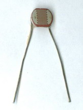
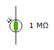
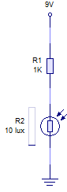
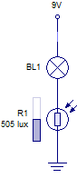

L.D.R.: resistencias dependientes de la luz
LDR son las iniciales de "Light Dependent Resistor" (resistencia dependiente de la luz).
Una LDR es una resistencia cuyo valor óhmico disminuye al ser iluminadas por luz (visible o no, como la infrarroja o la ultravioleta).
El símbolo de una LDR lo puedes ver aquí a la izquierda. A la derecha tienes una LDR comercial.
Una LDR se fabrica de un material que en la oscuridad tiene una elevada resistencia eléctrica y, al ser iluminado, aumenta su conductividad y, por tanto, disminuye su resistencia. Decimos que el material es un fotoconductor.
Si te fijas en la siguiente curva:
la resistencia no es directamente proporcional a la intensidad de luz. El fabricante suministra en una hoja conocida como datasheet, valores como: valor de la resistencia en la oscuridad (RD), valor de la resistencia en iluminación (RL) a 1000 lux (el lux es la unidad de medida de la intensidad luminosa); tensión máxima admisible; potencia máxima admisible, etc.
Puedes consultar la datasheet de cualquier componente electrónico en la web: www.datasheetcatalog.net.
Una LDR se emplea, por ejemplo, en un circuito detector de luminosidad o de oscuridad, como vemos en el vídeo.
Otro montaje típico es formando un divisor de tensión con otra resistencia, como se puede ver a continuación (descárgalo y simúlalo en el enlace inferior):

¿Para qué sirve este montaje?
Piensa un poco en la utilidad que puede tener el siguiente montaje...

Obra publicada con Licencia Creative Commons Reconocimiento No comercial Compartir igual 4.0